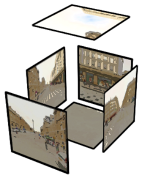
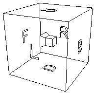

Le site Mappy offre depuis 2011 des vues 360° des 320 villes plus grandes villes de France :
MappyCar
En effet, 2 voitures surnommées "MappyCar" (@earthmine02, @earthmine07) parcourent les rues des villes de France pour prendre des photos sous plusieurs angles.
Historiquement...
Historiquement, le composant chargé d’afficher les vues sur le site fr.mappy.com fût développé en Flash.
Il était grand temps de mettre ce composant à jour en adoptant des technologies modernes pour afficher de la 3d au sein du navigateur, j’ai nommé WebGL.
Mais avant de nous plonger dans WebGL, une présentation des vues 360 s’impose.
Explications des prises de vue 360
Les véhicules Mappy sont équipés de 8 appareils photos orientés de chaque côté de la voiture et prennent des photos régulièrement de façon synchronisée pendant le déplacement. Ils enregistrent également différents paramètres tels que les coordonnées GPS, l’altitude, le tangage (pitch), l’orientation (yaw) et le roulis (roll).
Les photos sont ensuites assemblées afin d'obtenir 6 images. Ces 6 images seront projetées à l’intérieur d’un cube. Ce cube est alors appelé "skybox".

Scène 3d
L’astuce est alors de créer une scène 3d composée de ce cube et d’une caméra au centre.

La caméra peut bouger à l’intérieur du cube sur 2 axes afin de pivoter horizontalement et verticalement, donnant l’effet de regarder autour de soi.
Déplacement
Il y a plusieurs façons de se déplacer d'une vue à l'autre :
- En utilisant les flèches, on peut se déplacer vers la vue la plus proche dans la direction souhaitée.
- En cliquant sur le sol, on va chercher s'il existe une vue proche à ce point et l'afficher.
Le déplacement d'une vue à l'autre consiste simplement à charger les images formant la nouvelle "skybox" (le cube dans lequel se trouve la caméra) et à effacer les précédentes.
Il est également possible de zoomer dans la vue. Pour cela, nous avons joué sur l'angle de vision (on l’appelle field of view en anglais).
Chargement progressif
Afin d'avoir un rendu le plus rapide possible et pour éviter à l'utilisateur de bloquer sur un fond noir lorsque sa connexion est lente, la vue charge d'abord un cube avec des images de basse qualité, donc très légères. Lorsque cette première "skybox" est affichée, la vue va charger des images de meilleure qualité. En fonction de la taille d’écran ou de la résolution, chaque face du cube sera composée d'une ou de plusieurs images (1, 4 ou 16 images par face) afin d’avoir un rendu net sur tous les supports.

Three.js
Plutôt que de réinventer la roue, nous nous sommes rapidement orientés vers three.js, une excellente librairie 3d. Three.js permet, en quelques lignes de code, d’afficher une vue 3d sans avoir à manipuler l’API WebGL de plus bas niveau.
Voici un exemple de "skybox" basique où la caméra tourne sur elle-même :
Interaction avec les objets
Savoir sur quel élément a cliqué l’utilisateur dans un moteur 3d est plus compliqué que simplement ajouter un "listener" sur un élément HTML. En effet, lors d’un clic dans la scène 3d, nous récupèrons simplement un point (x,y) et il convient alors de trouver quel objet il croise (c’est le principe du raycasting).
Pour cela, nous allons d’abord trouver le vecteur 3d entre ce point et la position de la caméra. Ensuite, Three.js nous propose le Raycaster qui permet ensuite de détecter une intersection avec un objet 3d.
var vector = getVectorFromEvent(event);
var raycaster = new THREE.Raycaster(this.camera.position, vector);
var intersectedObjects = raycaster.intersectObjects(objectsIn3dScene);
Support navigateurs
WebGL est supporté dans tous les navigateurs modernes, y compris IE11. Cependant, nous nous sommes rapidement rendus compte que certaines tablettes ou téléphones Android, bien que récents, ne supportent pas WebGL. Par ailleurs, WebGL peut être désactivé en fonction des pilotes installés (ou non) sur la machine.
Par conséquent, nous avons également utilisé un système de rendu alternatif proposé par Three.js, le CSS3DRenderer.js.
Ce dernier utilise les transformations CSS 3d qui sont elles supportées de façon un peu plus large. CSS3DRenderer est en pratique moins performant que WebGL mais permet d’offrir un support minimal sur ces périphèriques ainsi que sur IE 10.
Réalité augmentée et cardBoard
Les téléphones et tablettes modernes possèdent des capteurs d’orientations. Ils sont accessibles en JavaScript via API DeviceOrientations. Nous n’avons pas pu résister à l'envie de connecter cette API à la vue pour la piloter avec son téléphone.
Enfin, si vous disposez d’un cardboard (boîte en carton où l’on peut insérer son téléphone), vous pouvez chausser vos lunettes et visualiser les vues 360 en réalité augmentée.
Three.js implémente cette fonctionnalité via StereoEffect et DeviceOrientationControls. Je vous invite à lire ce très bon article si le sujet vous intéresse.
Un dernier mot sur l’intégration des vues sur votre site
Mappy propose plusieurs modes d’intégration pour ses cartes ou sa vue 360. L’un des modes se présente sous la forme d’un widget (tel que l’exemple en haut de cette page). N’hésitez pas à nous contacter (contact[AT]mappy.com) si une intégration sur votre site ou vos applications mobiles vous intéresse.